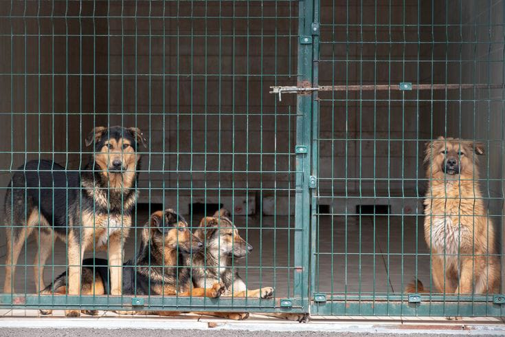
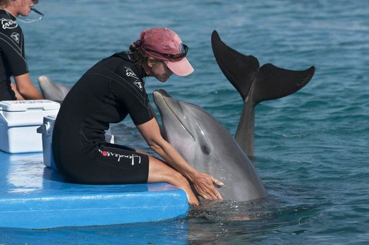
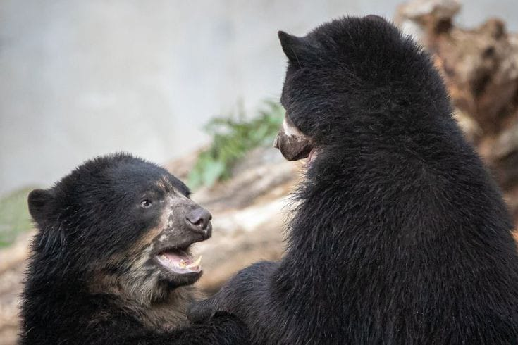
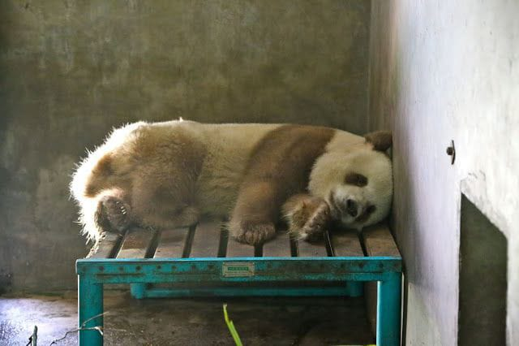

Our Mission
|  |
Volunteer at Animal Shelters
Our mission is to volunteer at animal shelters and care for animals in need. We help by feeding, walking, grooming, and spending time with pets until they find their forever homes. We want to make a positive difference in the lives of abandoned or abused animals by giving them the love and attention they deserve. Together, we can bring joy to these animals and help them find a loving home.
|
|  |
Spread Love
Our mission is to spread love and compassion for animals everywhere. We aim to raise awareness about animal welfare, advocate for humane treatments, and support initiatives that improve the quality of life for all creatures. Through outreach programs, adoption drives, and educational campaigns, we seek to unite individuals in sharing their affection and care for animals, ultimately creating a society where every being receives the kindness and respect they deserve.
|
|  |
Safeguard Animal Habitats
Our mission is to safeguard animal habitats so wildlife can thrive. We work to conserve nature by using eco-friendly methods, repairing damaged ecosystems, and informing people about why diverse habitats matter. By partnering with the community, we aim to protect these essential places where animals belong. Together, we'll secure a future where all animals can live safely in their natural homes.
|
|
Friendly Animal Daycare
Our mission is to create a friendly animal daycare where pets can feel safe and happy. We provide fun activities for dogs and small animals to keep them active and social. Our caring staff will give each pet the attention they need. We want to be a trusted place for busy pet owners, ensuring their furry friends are well cared for and loved while they’re away.
|
|
|  |
Rescue and Rehab
We rescue and rehab animals in need, providing a safe space and proper care. We help those who are abandoned, abused, or hurt through thorough rescue operations and medical treatment in supportive settings. By spreading awareness about animal welfare and encouraging good pet parenting, we teach our community to be compassionate towards all creatures. Our goal is to build a kinder world where every animal can enjoy happiness and well-being.
|